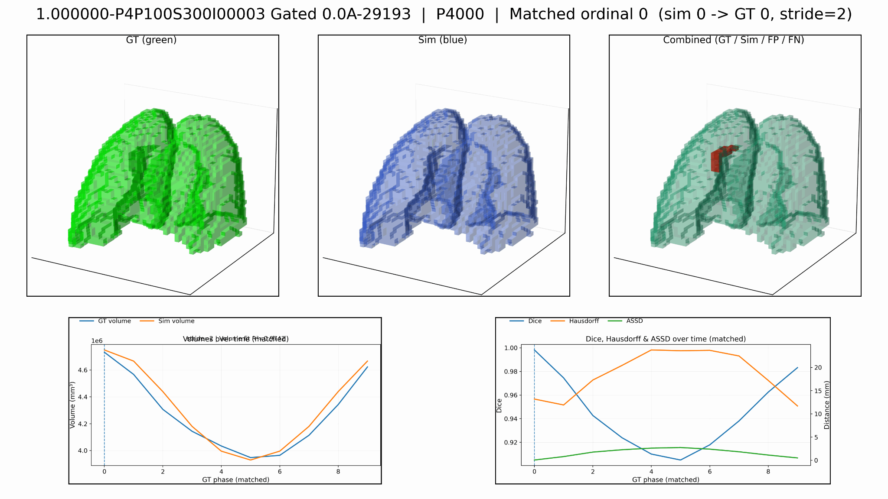

Alex Dils
UC Berkeley Computer Science. Computer vision and medical AI.
Research with Stanford Medicine. I build and evaluate vision models with an emphasis on robustness, bias, augmentation, and segmentation.
Email / LinkedIn / Google Scholar / GitHub / CV
Research
Medical imaging
Bias and confounder mitigation for image diagnosis, plus physiologically plausible augmentation from lung motion simulation.
Generative and analytical vision
Conditional GANs and geometry based depth methods for view synthesis, plus hybrids that combine both.
Environmental ML
GAN generated ecological context to improve segmentation across varied water samples.
Systems
End to end ML systems from ingestion to evaluation to delivery.
Media
Appraise AI prototype

Appraise AI demo
Breathing lungs visualization

Research poster

Segmentation overlay

Validation figures


Publications
Microplastic Identification Using AI-Driven Image Segmentation and GAN-Generated Ecological Context
Eye For An Eye: A Deep-Learning and Analytical Method to Spatializing Stereoscopic Images
Integrating Mechanistic Knowledge into Deep Learning for Improved Cancer Detection
Addressing Bias and Confounders in AI-based Image Diagnosis, A Study of 117,610 Skin Lesions
Projects
Contact
dils@berkeley.edu